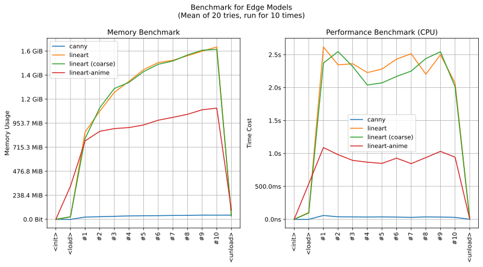
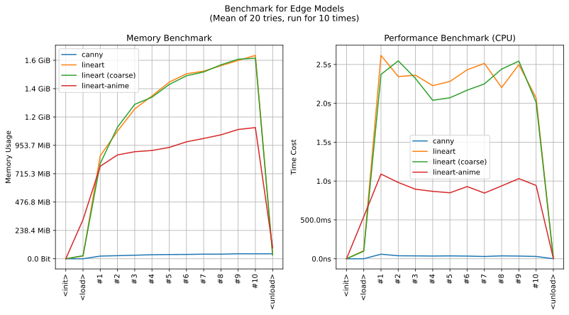

imgutils.edge
- Overview:
Obtaining the outline (or you can call that line drawing) of an anime image.
Here is the example and comparison:

This is an overall benchmark of all the outline models:

Obtaining the outline (or you can call that line drawing) of an anime image.
Here is the example and comparison:
This is an overall benchmark of all the outline models:
